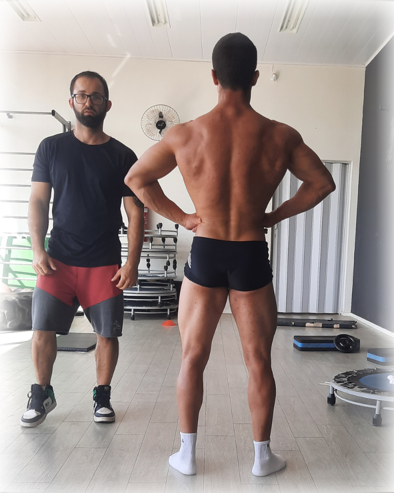

O método que uso com atletas de fisiculturismo, ajustado para construir o seu melhor físico sem extremismos. Nutrição e treino sob medida, com suporte direto comigo de segunda a sexta.
Quero transformar meu físicoResposta rápida via WhatsApp

Não é falta de vontade ou esforço. É método. Veja o que está atrasando o seu resultado.
Seu corpo se adapta ao déficit calórico e ao treino estagnado. Sem periodização, você gasta energia para manter o que tem, não para continuar evoluindo.
Treinos prontos de internet não geram hipertrofia de forma consistente. Sem sobrecarga progressiva calculada para o seu nível, seu músculo não tem estímulo para crescer.
Cortar calorias demais destrói suas chances de manter a dieta tempo suficiente pra evoluir e aprender a comer bem. O efeito sanfona não é falta de força de vontade, é consequência de um plano mal planejado.
Quatro etapas que transformam dados reais em resultado visível, sem achismos.
Antes de qualquer dieta ou treino, entendo seu histórico, rotina, restrições e preferências. O plano começa aqui... Feito para você, não para uma média genérica.
Dieta e treino personalizados entregues no aplicativo SamplaFit. Você tem acesso a tudo pelo celular: refeições, treinos e histórico de evolução.
Check-ins periódicos para revisar o que está funcionando e o que precisa mudar. Sem deixar você travado por semanas esperando retorno.
Você fala comigo, não com uma equipe, não com um robô. Dúvidas, ajustes de última hora e orientações em tempo real durante a semana.
Vagas limitadas, pois, atendo pessoalmente cada aluno
Resultados reais de quem passou pelo método... não simpatia, resultado.
Sou Deividi S. Ferreira, nutricionista esportivo e preparador de atletas de fisiculturismo desde 2017. Trabalho com o que há de mais exigente no condicionamento físico e aplico essa mesma precisão para quem quer resultado estético real na vida comum.
Não existe plano de internet que vai te dar o que um acompanhamento individualizado entrega. A diferença está no feeling, na periodização e nos ajustes semanais, não no plano em si.
Direto comigo, sem intermediários
Dois planos, mesmo método. A diferença está no tempo de adaptação e no custo por mês.
3 meses de acompanhamento contínuo. Ideal para quem quer começar e ver resultado real antes de um compromisso maior.
6 meses, tempo suficiente para periodizar, ajustar e consolidar o resultado. Melhor custo por mês e transformação mais sólida.
Sim. O método adapta o estímulo e a dieta ao seu nível atual. Iniciantes muitas vezes têm os resultados mais expressivos justamente porque partem de uma base correta desde o início.
Tudo é entregue no aplicativo SamplaFit, acessível pelo celular. Você visualiza suas refeições, treinos, e histórico de evolução em um só lugar... Sem planilha, sem PDF.
Sim. A dieta é calculada a partir do seu contexto e das suas preferências reais. Não existe um plano padrão que eu envio para todo mundo, cada aluno tem o seu.
Direto comigo, de segunda a sexta. Não tem intermediário nem equipe respondendo no seu lugar. Isso é um dos motivos pelo qual trabalho com número limitado de alunos.